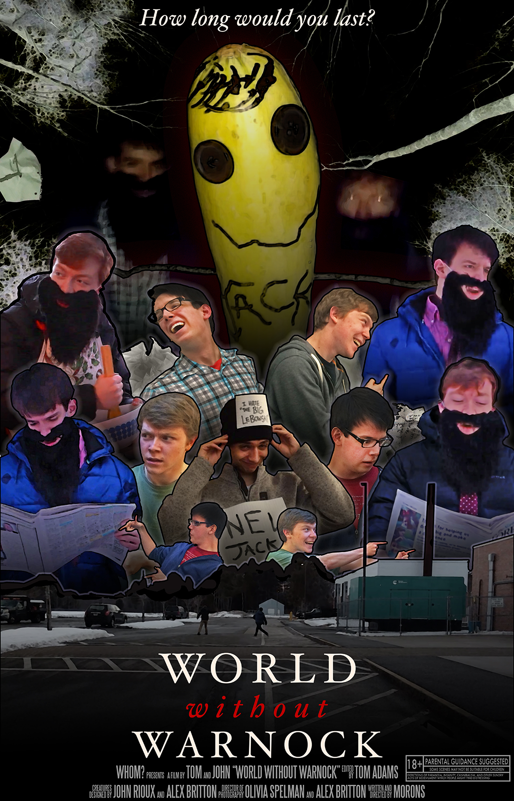
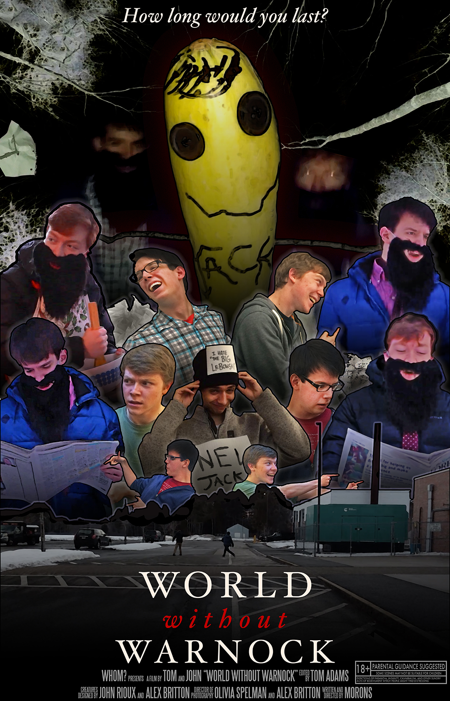

A Universe of Self-Indulgence
Between 2017 and 2019, the vast majority of my creative output consisted of projects created simply for the amusement of myself and my friends, without much consideration for a larger audience. These were short films made as personal birthday gifts, live shows put on as elaborate pranks, a video game made entirely out of inside jokes—projects with such a disparity between effort and purpose that this disparity has become an artistic statement in itself. Whatever claims to “irony” we made while doing this have probably been undercut by the sincerity with which we’ve kept the bit up. It’s pure self-indulgence.
The problem is that none of these projects make any sense to include in a professional portfolio. There’s a movie here about my friend going back in time to stop one of our older movies from being made. Nobody should be subjected to that. Yet, such a ridiculous amount of time was put into these projects, and with such a commitment to production value, that my portfolio feels incomplete without them. I’ve decided to compile them here, presented chronologically and with the absolute minimum amount of context I could possibly provide so that an outsider could maybe understand what any of it is. Unless you’re one of maybe four people, nothing on this page was made with the intention of you seeing it. If that's somehow more intriguing than it is deterring, please enjoy what has turned into A Universe of Self-Indulgence.
On the heels of our recent short film, my friend and collaborator Tom Adams and I entered our senior year of high school without any specific plans for another project. As a result, our creative energy found bizarre outlets, like class projects, where we became delighted by the idea of putting in unprecedented amounts of effort.
These projects included a short film about psychological conditioning , a radio play about the dangers of social media , a "trailer" for a school dance , and an elaborate lip-sync battle performance in which we somehow convinced our high school principal to jump through a hula-hoop.


In the middle of that senior year—the week of mid-terms, to be exact—our mutual friend Jack Warnock went away on some sort of week-long community service trip. Jack was the third member of a group chat we created about a year prior called “Big Trouble in Little Caesars” (for reasons not worth explaining), and in his absence we felt it necessary to send him a ridiculously convoluted artistic tribute. Instead of studying for mid-terms, we spent the week exploring the capabilities of instant messaging as a storytelling device.
Click here to view all five installments of World Without Warnock.


 

Upon graduating high school in 2017, Tom and I felt we had to commemorate the end of an era with a grand event. In lieu of a graduation party, we wanted to showcase the video content we created in high school, to tell the story of our growth as filmmakers. We compiled every short film, school assignment, and bizarre experiment we had made in the last three years—about two hours of footage—and invited our guests to attend what we dubbed “An Evening of Self Indulgence,” which would take place in our friend’s home theater.
Eager to create something greater than the sum of its parts, we pushed our presentation as far as we could. We wrote dialogue to perform between each video screening, but what started as a way to provide logical transitions between the films turned into a series of increasingly absurd comedy bits, like announcing an MCU-esque lineup of fake sequels to the films we were screening. We enlisted our friend Peter to run video and lights, dressed the theater with appropriate decor, and sent out invitations that explained nothing but insisted our guests wear formal attire. On the night of the show, we hid in the “green room” and listened as our guests stood around asking each other if anyone knew what was about to happen. Once the guests were seated, Peter dimmed the lights, and we baffled our audience with the three-hour show that we threw together in two weeks.
Here is some of the original video we recorded for the Evening of Self-Indulgence.
The first film of the night was the first video I made for my sophomore year film class, a dumb comedy sketch called “Interrogation.” To bring our audience back into the year 2014, Tom and I recorded a prologue that, for some reason, was a shot-for-shot pastiche of the opening to The Big Lebowski. Here's the Interrogation Prologue.
(Major goof: despite our efforts to present a detailed recreation of 2014 and the events leading up to the first Interrogation shot, we somehow left my high school diploma clearly visible in the background.)
One day in December 2016, I made the mistake of recording an asinine freestyle rap in my bedroom and sending it to my friends, which ended up getting way more airtime amongst my peers than I intended. The Evening of Self-Indulgence was divided into two acts, and after ending Act One on a high note with Please Hire Pat Hilling, we wanted to give Act Two a strong start, so we recorded an entirely undeserved music video for “Rhymes, Beats, and Mini-Wheats.”
To end the evening, Tom and I looked toward the future. Reflecting on the work we'd done, and realizing our paths would likely diverge as we embarked on post-high school life, we created a silent film to bring the evening to a somber conclusion. If I remember correctly, the goal was to see if we could make anyone in the audience cry. The resulting film: Porch.
Text text text
Text text text